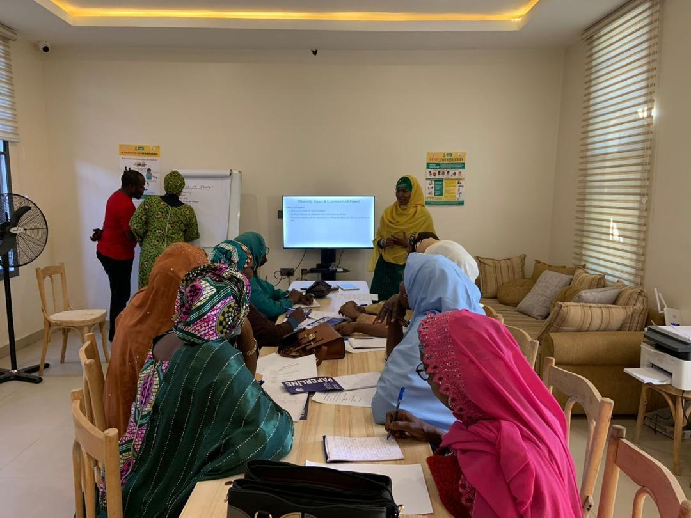

The field work event at Kano state which was chosen as a case study entails citizen ethnography training and research. it took place between January 15th - February 7th 2024.
Activities:
- Key Informant Interviews (KII) with various stakeholders (staff, community leaders, healthcare workers, etc.)
- Transcription and debriefing sessions
- Power mapping workshops
- Ethnography training and fieldwork
- Workshops with Red Cross officials, researchers, and ethnographers
- Analysis and debriefing sessions
Responsibilities:
- Dr. Dukku: Lead facilitator, community leader engagement, and citizen ethnography training
- Dr. Amina: Healthcare worker and community member engagement
- Dr. Sani: Healthcare worker, community member, and public health official engagement
- Jameelu: Red Cross branch staff and community member engagement
- Umar: IFRC Abuja staff and RC HQ staff engagement
- Dr. Yashua: IFRC Abuja staff and RC HQ staff engagement
This event aims to conduct research and training on citizen ethnography, engaging various stakeholders to gather insights and feedback. The schedule outlines a series of activities, including interviews, workshops, and debriefing sessions, to achieve this goal.